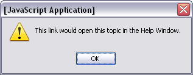
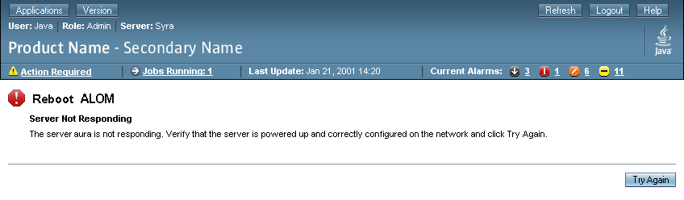
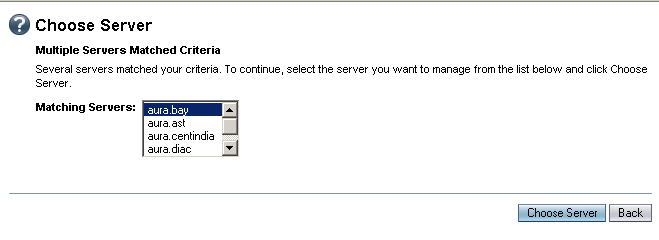
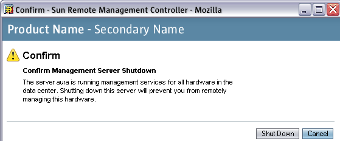

Sun Web Application Guidelines - Version 4.1
Sun Web Application Guidelines - Version 4.1
|
|
|
| [ Table of Contents | 0 Revision History | 1 Introduction | 2 Visual Design | 3 Windows and Pages | 4 Mastheads | 5 Top-Level Navigation | 6 Content Area | 7 Simple Elements | 8 Complex Elements | 9 Tables | 10 Topology | 11 Contextual Help | 12 Search | 13 Wizards | 14 Alerts and Messages | 15 Progress Indicators | 16 Alarms and Status Indicators | 17 Login Page | 18 Version Page | Appendices ] |
How To Use These Guidelines - An Introduction
14.1.1 Example of Information Inline Alert
14.1.2 Example of Error Inline Alert
14.1.3 Example of Warning Inline Alert
14.1.4 Example of Success Inline Alert
14.4 Alerts Shown in a Pop-Up Window
14.5.1 Validation Error Messagesplay Type
14.6 Choosing the Correct Alert Display Type
Based on the severity or purpose of the message, the alerts used in browser-based Sun Applications can be categorized into five types:
| Alert Type | Icon | Description |
|---|---|---|
| Information |
|
An Information alert presents general information to users. |
| Warning |
|
A Warning alert can be used to
|
| Error |
|
An Error alert reports system and application errors to users. |
| Question |
|
A Question alert asks the user a question, usually before being able to carry out a requested action. For example, if the user requests that an action be carried out on an object and identifies that object by specifying search criteria that returns multiple results, a question alert can be used to ask the user which object within the search results is the one to be acted upon. |
| Success |
|
A Success alert indicates that an action has completed successfully. A likely place to see this is in an inline alert on a wizard Results page, when the action performed by the wizard has completed successfully. See Chapter 13, Wizards, for more information on wizards. |
For a more detailed description of alerts, including when they should be used, see Chapter 8 of the Java Look and Feel Design Guidelines at http://java.sun.com/products/jlf/ed2/book/HIG.Dialogs5.html.
 For each alert, provide an icon that indicates its type (icons available from
2.4.3 Icons, Glyphs, and Graphics Repository).
For each alert, provide an icon that indicates its type (icons available from
2.4.3 Icons, Glyphs, and Graphics Repository).
Based on the way they are displayed, the alerts used in browser-based Sun Applications can be categorized into five display mechanisms:
 Display an alert in one of five ways: Inline alert, JavaScript alert, full-page
alert, pop-up window, validation alert.
Display an alert in one of five ways: Inline alert, JavaScript alert, full-page
alert, pop-up window, validation alert.
Together, these five alert types and five display mechanisms give us a matrix of 25 cells. Not all of these cells are valid. For instance, we cannot use the Inline display mechanism for a Question Alert. The following table shows all the valid combinations of Alert Types and Alert Display Mechanisms.
| Display Mechanism | Information Alert | Error Alert | Warning Alert | Question Alert | Success Alert |
| Inline Alert | Valid | Valid | Valid | Not Valid | Valid |
| JavaScript Alert | Valid (use JS alert type: Alert) |
Valid (use JS alert type: Alert) | Valid (use JS alert type: Alert) | Valid (use JS alert type: Confirm) | Valid (use JS alert type: Alert) |
| Full-page Alert | Valid | Valid | Valid | Valid | Valid |
| Pop-up Window | Valid | Valid | Valid | Valid | Valid |
| Validation Alert | Not Valid |
Valid | Not Valid | Not Valid | Not Valid |
 When a Warning alert is used to confirm a user's action, follow these guidelines:
When a Warning alert is used to confirm a user's action, follow these guidelines:
 Use inline alerts whenever possible.
Use inline alerts whenever possible.
Inline alerts are a familiar web idiom. They permit users to correct problems or proceed with their work without having to dismiss a window and navigate to a new location.
 Generally, do not use inline alerts for:
Generally, do not use inline alerts for:
 Display inline alert messages at the top of the page and centered horizontally
within the content area of the page. See 6.1.1
Location of Inline Alert Messages for more specific information about the
placement of inline alert messages.
Display inline alert messages at the top of the page and centered horizontally
within the content area of the page. See 6.1.1
Location of Inline Alert Messages for more specific information about the
placement of inline alert messages.
 Include an alert icon and summary text at the top of the
inline alert. Follow this with additional text providing details of the alert.
Include an alert icon and summary text at the top of the
inline alert. Follow this with additional text providing details of the alert.
 Center the icon/summary and detailed text elements within the inline alert. Size the alert based on the wider element. Wrap the detailed text if necessary, but make this a block of centered text (each wrapped line is not centered independently).
Center the icon/summary and detailed text elements within the inline alert. Size the alert based on the wider element. Wrap the detailed text if necessary, but make this a block of centered text (each wrapped line is not centered independently).
 Use the appropriate icon for each inline alert, depending on the type of alert (see the table in 14 Alerts and Messages for details).
Use the appropriate icon for each inline alert, depending on the type of alert (see the table in 14 Alerts and Messages for details).
 Apply headline capitalization (see 2.5 Text Capitalization) to the summary text
of each inline alert.
Apply headline capitalization (see 2.5 Text Capitalization) to the summary text
of each inline alert.
 Do not use buttons inside inline alert messages.
Do not use buttons inside inline alert messages.
You can embed links inside inline alert messages. See the link text "settings currently in use" in 14.1.3 Example of Warning Inline Alert.
 When links are present inside inline alert messages, they should appear follow the detailed message. Display the link either to the right of the detailed message text or below it based on the amount of horizontal space available within the inline alert and the width of the link text.
When links are present inside inline alert messages, they should appear follow the detailed message. Display the link either to the right of the detailed message text or below it based on the amount of horizontal space available within the inline alert and the width of the link text.
 When links are present inside inline alert messages, they should have HTML Title
attribute text specified for them. If the link will open a new window, the Title
text should specify that a new window is being opened, for example, "Error Log
(Opens a New Window)." If the link does not open a new window, the Title text
should contain some descriptive text.
When links are present inside inline alert messages, they should have HTML Title
attribute text specified for them. If the link will open a new window, the Title
text should specify that a new window is being opened, for example, "Error Log
(Opens a New Window)." If the link does not open a new window, the Title text
should contain some descriptive text.
 When
links are present inside inline alert messages, the window that is opened from
the link should not provide further links. Typically, the only action from these
opened pages should be "Close."
When
links are present inside inline alert messages, the window that is opened from
the link should not provide further links. Typically, the only action from these
opened pages should be "Close."

See 14.5 Validation Error Alerts for information about updating a field's label to indicate that the user has made an error.
Note that "Settings currently in use" is a link to a pop-up window that displays the settings that are currently in use.

 Use a JavaScript alert only when an inline alert is inappropriate, as in client-side
validation errors (for example, data input errors).
Use a JavaScript alert only when an inline alert is inappropriate, as in client-side
validation errors (for example, data input errors).
Note that this distinction might seem arbitrary to users. Therefore, if some errors can be detected only on the server, balance the quick response of client-side validation errors against the inconsistency that having both types of errors creates. Alternatively, if most errors can be detected on the client but a small proportion can be detected only on the server, consider displaying the server-side errors as JavaScript alerts. As such, the application can show most errors immediately while maintaining a consistent method for displaying errors.
Implementing an alert as a simple JavaScript alert is
often preferable over a pop-up window because a JavaScript alert window is a
modal window. A modal window loads much quicker than a browser window. The three
types of JavaScript alerts are Confirm, Alert, and Prompt. See 3.3
JavaScript Windows for more information.

 Use the appropriate icon for each of the following alert types: "Error," "Warning,"
"Question," "Information," or "Success."
Use the appropriate icon for each of the following alert types: "Error," "Warning,"
"Question," "Information," or "Success."
 For the page title next to the icon, use a context-specific short name for the
alert, such as "Reboot
For the page title next to the icon, use a context-specific short name for the
alert, such as "Reboot ALOM" in the preceding example.
 Apply headline capitalization (see 2.5 Text Capitalization) to the page title
of each full-page alert.
Apply headline capitalization (see 2.5 Text Capitalization) to the page title
of each full-page alert.
 Devote a full browser page or frame for a question alert, or to report a system
error or warning (for example, if the system cannot update a database), according
to the following guidelines:
Devote a full browser page or frame for a question alert, or to report a system
error or warning (for example, if the system cannot update a database), according
to the following guidelines:
 For a full-page alert, use the standard masthead and breadcrumbs. The page title
should be echoed in the breadcrumbs as the current page. However, it can be
shortened if needed.
For a full-page alert, use the standard masthead and breadcrumbs. The page title
should be echoed in the breadcrumbs as the current page. However, it can be
shortened if needed.
 If using the breadcrumbs to go back might cause confusion (for example, the
user may wonder if an action on the page will get canceled in the process),
remove the links from the breadcrumb contents, leaving simple text instead.
If using the breadcrumbs to go back might cause confusion (for example, the
user may wonder if an action on the page will get canceled in the process),
remove the links from the breadcrumb contents, leaving simple text instead.
 However, if this confusion is possible, reevaluate your design. Users could
still use the browser's controls to navigate elsewhere, so that confusion might
still be a problem.
However, if this confusion is possible, reevaluate your design. Users could
still use the browser's controls to navigate elsewhere, so that confusion might
still be a problem.
A full-page alert can also contain one entry field (one
text field, one text area, one checkbox, one set of radio buttons, one drop-down
menu, or one scrolling list). This feature allows the alert to prompt for one
value, as shown in the following example. Follow the guidelines for full-page
alerts along with the guidelines for the element chosen and its label.

A full-page alert displayed in a pop-up window is called a pop-up alert. (In contrast, a full page alert that swaps out the page in a main browser window is not a pop up alert. It is a full page alert and should follow the guidelines for a full page alert.)
Displaying a full-page alert in a pop-up window may be done in order to have a pop-up alert that has buttons more specific than those buttons available in a JavaScript alert, or to allow the user to input a value for one field without losing the visibility of the original page context and content. (This functionality is more complicated than the simple entry field available in a JavaScript alert). A full-page alert can also show an appropriate icon for each type of alert, rather than the unchangeable warning or question icons shown on JavaScript alerts.
However, this type of alert is not modal, allowing the user to accidentally bury the alert rather than respond to it. Also, this type of alert loads much more slowly than a JavaScript alert. The designer must decide if those issues outweigh the benefits of using this pop-up alert over a full-page alert in the main browser window or a JavaScript alert.

Note that Cancel is the default button in the image above. This is unusual, but done for particularly irreversible actions such as the one shown in this example (and like those you might use a full page alert for in general).
 To display a pop-up alert for a main window, open a new pop-up window. To display
a pop-up alert for a pop-up window, use that same pop-up window to
display the alert, replacing the original contents. In either case, follow
the applicable guidelines in 14.3 Full-Page Alerts.
To display a pop-up alert for a main window, open a new pop-up window. To display
a pop-up alert for a pop-up window, use that same pop-up window to
display the alert, replacing the original contents. In either case, follow
the applicable guidelines in 14.3 Full-Page Alerts.
 For pop-up alerts invoked from main browser windows, the pop-up window should
not be chromed and should contain a pop-up window masthead. (Refer to 4.2
Pop-Up Window Masthead for details.) The window size should be appropriate
to the content, but should always be smaller than the window that invoked it.
The window should appear in the golden mean location, as described in 3.2
Pop-Up Windows.
For pop-up alerts invoked from main browser windows, the pop-up window should
not be chromed and should contain a pop-up window masthead. (Refer to 4.2
Pop-Up Window Masthead for details.) The window size should be appropriate
to the content, but should always be smaller than the window that invoked it.
The window should appear in the golden mean location, as described in 3.2
Pop-Up Windows.
 For pop-up alerts invoked from main browser windows, follow the window title
guidelines as described in 3.5 Window Title
Bars. Include the alert page title, then a dash separated by spaces, and
then the application name.
For pop-up alerts invoked from main browser windows, follow the window title
guidelines as described in 3.5 Window Title
Bars. Include the alert page title, then a dash separated by spaces, and
then the application name.
 Similar to JavaScript alerts, use pop-up alerts only when an inline alert is
inappropriate, as in client-side validation errors (for example, data input
errors).
Similar to JavaScript alerts, use pop-up alerts only when an inline alert is
inappropriate, as in client-side validation errors (for example, data input
errors).
Note that this distinction might seem arbitrary to users. Therefore, if some errors can be detected only on the server, consider showing all errors as inline alerts on the main browser window rather than some there and some in pop-up windows. Alternatively, if most errors can be detected on the client but a small proportion can be detected only on the server, consider displaying the server-side errors as pop-up alerts. As such, the application can show most errors immediately while maintaining a consistent method for displaying errors.
Validation error alerts are used to highlight an invalid entry or selection made by a user within the contents of a page.
The presentation of a validation alert includes: an error alert icon to the left of the label for each field where the user has made an error (icon available from 2.4.3 Icons, Glyphs, and Graphics Repository); the field label's color is changed to highlight the field that is in error; and if the field level alert is on a text field, the text input field will be highlighted.
A validation error alert may also include an error inline alert at the top of the page (see 14.1.2 Example of Error Inline Alert) to indicate that there are validation errors on the page. This error message should also appear in the tool tip of each error alert icon on the page or a validation error message must be shown (see 14.5.1 Validation Error Messages). However, if multiple errors exist on the page, a more specific tool tip may be used for each field, as the error inline alert message may not be specific enough to use for each field.
 Follow these presentation guidelines for identifying validation errors within a page:
Follow these presentation guidelines for identifying validation errors within a page:
The following example demonstrates the presentation of field-level error icons, error message, Required Field Glyph and text field highlighting:

Client-Side Validation
When a field is exited, it should be validated on the client with data being valid in ways the client can detect. For example, a field may be validated on the client-side for requiring numeric input.
 Use the "onBlur" event, as the user leaves the field by clicking or tabbing elsewhere, for validation, if needed.
Use the "onBlur" event, as the user leaves the field by clicking or tabbing elsewhere, for validation, if needed.
 When an error is found, the field should be marked in error immediately. However, the user's focus should not be moved or disturbed.
When an error is found, the field should be marked in error immediately. However, the user's focus should not be moved or disturbed.
 When the user exits a field and there are no validation errors, any previous validation errors marked on that field should be removed.
When the user exits a field and there are no validation errors, any previous validation errors marked on that field should be removed.
AJAX Validation
Beyond checking for "obvious" errors on the client side, sometimes further validation could be done on field exit using AJAX validation of the field.
 Use the "onBlur" event, as the user leaves the field by clicking or tabbing elsewhere, for validation, if needed. This can be done in addition to Client-Side Validation.
Use the "onBlur" event, as the user leaves the field by clicking or tabbing elsewhere, for validation, if needed. This can be done in addition to Client-Side Validation.
 When an error is found, the field should be marked in error immediately. However, the user's focus should not be moved or disturbed.
When an error is found, the field should be marked in error immediately. However, the user's focus should not be moved or disturbed.
 When two or more field values are validated in conjunction with each other (such as city and state making a valid pair), that validation should occur only after both fields are entered.
When two or more field values are validated in conjunction with each other (such as city and state making a valid pair), that validation should occur only after both fields are entered.
 When fields become required based on entries in other fields, that required field validation should occur on page submit only.
When fields become required based on entries in other fields, that required field validation should occur on page submit only.
 When multiple fields are validated in conjunction with each other, every field involved in the validation should receive an error alert if errors are detected. Likewise when errors are corrected, validation errors should be removed from all involved fields.
When multiple fields are validated in conjunction with each other, every field involved in the validation should receive an error alert if errors are detected. Likewise when errors are corrected, validation errors should be removed from all involved fields.
 When validation errors are corrected, and alerts cleared, any related error inline alert at the top of the page should be cleared as well.
When validation errors are corrected, and alerts cleared, any related error inline alert at the top of the page should be cleared as well.
At times it may be useful to provide a textual message for a field in which the user has made an error.
 Display a validation error message in addition to using the validation alert
icon and field label updates specified in 14.5
Validation Error Alerts.
Display a validation error message in addition to using the validation alert
icon and field label updates specified in 14.5
Validation Error Alerts.
 Display validation error messages to explain why a field is in error, and/or
what is needed to fix the error. For example, it might be useful to display
a message if the user entered data in the wrong format, or if the user neglects
to input data or make a selection for a required field.
Display validation error messages to explain why a field is in error, and/or
what is needed to fix the error. For example, it might be useful to display
a message if the user entered data in the wrong format, or if the user neglects
to input data or make a selection for a required field.
 Keep validation error messages short by including only detail, not summary,
information. Messages need to be clear and concise so users can easily digest
the content and correct the errors.
Keep validation error messages short by including only detail, not summary,
information. Messages need to be clear and concise so users can easily digest
the content and correct the errors.
 Place validation error messages above the fields to which they pertain, and
include a blank line above the message so that the message and the field it
pertains to are visually related.
Place validation error messages above the fields to which they pertain, and
include a blank line above the message so that the message and the field it
pertains to are visually related.
 Display validation error messages using non-bolded, red text.
Display validation error messages using non-bolded, red text.
 Use inline alerts or validation alerts whenever possible. A
validation alert can be considered a special type of an inline error alert which
is used when user data input is incorrect, and is positioned in greater proximity
to the field where the user needs to make a correction (rather than at the top of
the page, where error inline alert messages are presented).
Use inline alerts or validation alerts whenever possible. A
validation alert can be considered a special type of an inline error alert which
is used when user data input is incorrect, and is positioned in greater proximity
to the field where the user needs to make a correction (rather than at the top of
the page, where error inline alert messages are presented).
 Use a JavaScript alert, pop up alert, or full page alert only when an inline
alert is inappropriate, as in client-side validation errors (for example, if
the user selects multiple items in a list, and tries to apply an action that
can only be applied to some of the items in the list , you can use a JavaScript
Alert).
Use a JavaScript alert, pop up alert, or full page alert only when an inline
alert is inappropriate, as in client-side validation errors (for example, if
the user selects multiple items in a list, and tries to apply an action that
can only be applied to some of the items in the list , you can use a JavaScript
Alert).
Note that this distinction might seem arbitrary to users. Therefore, if some errors can be detected only on the server, balance the quick response of client-side validation errors against the inconsistency that having both types of errors creates. Alternatively, if most errors can be detected on the client but a small proportion can be detected only on the server, consider displaying the server-side errors as JavaScript alerts. As such, the application can show most errors immediately while maintaining a consistent method for displaying errors.
 Generally, do not use inline alerts for:
Generally, do not use inline alerts for:
 Pop
up alerts or full page alerts can be used in place of JavaScript errors if the
JavaScript buttons are not sufficient to create an effective UI or if other
input mechanisms (such as multi-select boxes) are required.
Pop
up alerts or full page alerts can be used in place of JavaScript errors if the
JavaScript buttons are not sufficient to create an effective UI or if other
input mechanisms (such as multi-select boxes) are required.
 Full
page alerts are used when the user's full attention must be brought to the
alert -- the whole window is usurped for the message to ensure that the user
sees the message.
Full
page alerts are used when the user's full attention must be brought to the
alert -- the whole window is usurped for the message to ensure that the user
sees the message.
Additional Guidelines
A future release of the style guide may include specifications for linking
the inline validation error message at the top of the page to an anchor point
at the error's location within the page content.
Guidelines for errors that appear in tables may also be covered in a future
release.
| [ Table of Contents | 0 Revision History | 1 Introduction | 2 Visual Design | 3 Windows and Pages | 4 Mastheads | 5 Top-Level Navigation | 6 Content Area | 7 Simple Elements | 8 Complex Elements | 9 Tables | 10 Topology | 11 Contextual Help | 12 Search | 13 Wizards | 14 Alerts and Messages | 15 Progress Indicators | 16 Alarms and Status Indicators | 17 Login Page | 18 Version Page | Appendices ] |
| Privacy Policy | Terms of Use | Trademarks | Copyright 2007 Sun Microsystems, Inc. |